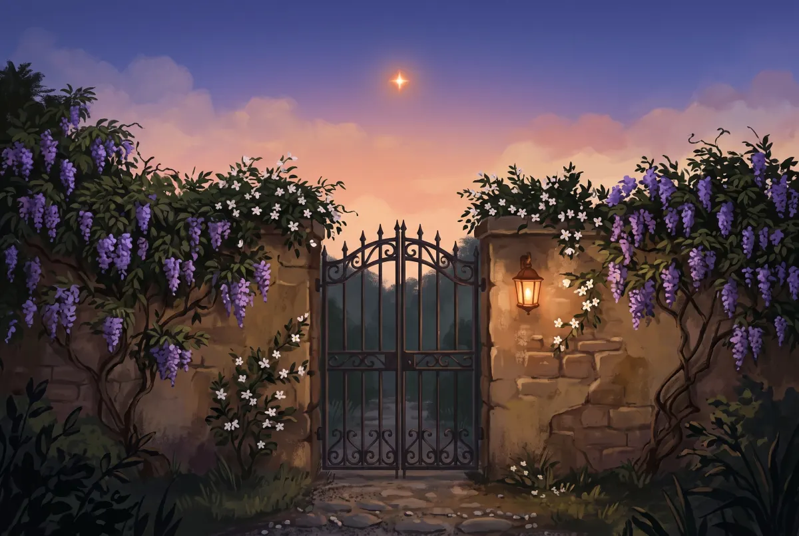

Arturo per organizzazioni
Uno studio, una redazione, un'associazione. Lo strato porta in Arturo chi siete, come scrivete, i lavori che si ripetono e i dati che non devono uscire. Lo cura un referente, e i colleghi lo ricevono con un comando.
Come funzionaQuattro strati, uno dentro l'altro
Ogni strato ha un padrone diverso. Chi aggiorna il suo non tocca gli altri. Lo strato della vostra organizzazione sta tra Arturo e i file di ognuno.
Scegli uno strato per vedere chi lo possiede
Il motore
Claude Code è un servizio a pagamento di Anthropic, un'azienda privata. Anthropic decide prezzi, limiti e funzioni, e li può cambiare. Quello che scrivi passa dai suoi server.
Arturo non cambia questa condizione. Ci lavora sopra.
- Padrone
- Anthropic
- Aggiorna
- Anthropic, con le sue versioni
Dal settings.json di Arturo
"permissions": {
…
"defaultMode": "auto"
}
Il classificatore di Claude Code giudica ogni comando. Le guardie di Arturo stanno sopra di lui, sulle azioni che non si annullano.
Il custode
Arturo è pubblico, gratuito, con licenza MIT. Porta le guardie di sicurezza, il ciclo di lavoro da /inizio a /fine e un curriculum dei principi per chi parte da zero.
18 guardie e automazioni, 13 comandi, 9 agenti, 5 skill.
- Padrone
- Progetto pubblico di Federico Nejrotti
- Aggiorna
- Tu, con
/aggiorna, dopo il tuo sì
Cosa arriva con gli aggiornamenti
~/.claude/hooks/le guardiecommands/i comandibin/la CLI arturo e la telemetriaagents/gli agentiskills/le skilldocs/il curriculumtemplates/il modello di stratoNOVITA.mdil racconto delle novità
La vostra organizzazione
Lo strato vive nel repository privato della vostra organizzazione. Dentro ci sono chi siete, come scrivete, i lavori che si ripetono e i dati che non devono uscire.
All'avvio Claude sa per chi lavora. La voce dell'organizzazione diventa una skill. Prima di mandare fuori un dato riservato, chiede conferma.
- Padrone
- La vostra organizzazione
- Aggiorna
- Il referente pubblica, i colleghi ricevono con
/aggiorna
Il modello che prepara /strato crea
plugins/strato/ORGANIZZAZIONE.mdchi siete, per chi lavorateskills/voce/regole.mdcome scriveteskills/modello-lavoro/un lavoro che si ripetedati-riservati.txtcosa non esce senza un sìhooks/contesto.pyall'avvio: per chi lavorahooks/dati-in-uscita.pyla conferma prima di un invio
I tuoi file
Il tuo CLAUDE.md, i server di cui ti fidi, i tuoi dati e i tuoi progetti. Nessun aggiornamento li tocca: né quelli di Arturo né quelli dello strato.
- Padrone
- Tu
- Aggiorna
- Solo tu
Tuo, nessun aggiornamento lo tocca
CLAUDE.mdle tue istruzionihooks/hosts-interni.locali server di cui ti fididata/i tuoi datiprojects/le tue cartelle di lavoro
Il referente non deve saper programmare
Serve che conosca il lavoro dei colleghi, che abbia voglia di provare, e che dedichi allo strumento un po' di tempo ogni settimana.
| Chi | Comando | Cosa succede |
|---|---|---|
| Referente | /strato crea | Una breve intervista, una domanda per volta: chi siete, come suonano i vostri testi, due lavori che si ripetono, cosa non deve uscire. Claude mostra cosa scrive prima di scriverlo. |
| Referente | /strato pubblica | Controlla che i file siano validi, poi pubblica nel repository privato. Il commit passa dal controllo segreti di Arturo. |
| Colleghi | /strato installa <indirizzo> | Prova l'accesso al repository, installa lo strato e dice cosa ha installato. Serve l'invito del referente. Poi si riapre Claude Code. |
| Tutti | /aggiorna | Scarica Arturo e anche lo strato. Una porta sola per tutti e due. |
Lo strato ha la sua guardia
Nel file dati-riservati.txt il referente elenca i nomi che non devono uscire. Se un comando sta per mandarne uno fuori dal computer, la guardia chiede conferma.
La richiesta è un esempio. Il messaggio è stato stampato dalla guardia dello strato il 30 settembre 2026, eseguita su questo comando.
Cosa vede il referente, e cosa no
Arturo manda a chi lo mantiene pochi dati d'uso, accesi di default. Al referente e all'organizzazione non arriva niente.
- Il referente non vede il lavoro dei colleghi.
Lo strato porta ai colleghi regole e modelli, e non riporta indietro niente. Il referente non vede il percorso a tappe di nessuno, né i suoi file o i suoi dati.
- I dati d'uso arrivano solo a chi mantiene Arturo.
Sono gli stessi per tutti: un elenco chiuso di eventi, mai testi, file o nomi. Né il referente né l'organizzazione li ricevono.
- I comandi dello strato non si registrano.
L'evento
comandovale solo per i tredici comandi di Arturo. Un comando tuo o dello strato resta fuori. - Ognuno decide per sé.
Ogni collega guarda cosa parte e spegne i dati d'uso con un comando. L'elenco degli eventi e i comandi sono nella presentazione di Arturo.
Per cominciare
Ognuno installa Arturo sul suo computer. Poi il referente scrive /strato crea in Claude Code, con la guida docs/referente.md accanto.